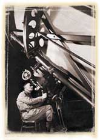
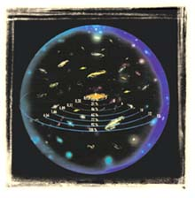

| EVRENÝN
GENÝÞLEMESÝ
Astronomi biliminin henüz geliþmemiþ olduðu bir dönemde, 14 asýr önce indirilen Kuran-ý Kerim'de evrenin geniþlediðinden þöyle bahsedilir: “Biz göðü 'büyük bir kudretle' bina ettik ve þüphesiz Biz (onu) geniþleticiyiz.„ (Zariyat Suresi, 47) Ayette geçen "gök" kelimesi Kuran'ýn pek çok yerinde uzay ve evren anlamýnda kullanýlýr. Burada da bu anlamda kullanýlmýþtýr. Yani Kuran'da, evrenin geniþleyici olduðu bildirilmiþtir. Bilimin bugün varmýþ olduðu sonuç da Kuran'da bildirilenle aynýdýr. |
 |
Yüzyýlýmýzýn baþlarýna dek bilim dünyasýnda hakim olan tek görüþ, "evrenin duraðan bir yapýya sahip olduðu ve sonsuzdan beri süregeldiði" þeklindeydi. Ancak, günümüz teknolojisi sayesinde gerçekleþtirilen araþtýrma, gözlem ve hesaplamalar evrenin bir baþlangýcý olduðunu ve sürekli olarak "geniþlediðini" ortaya koydu.
| Rus
fizikçi Alexander Friedmann ve Belçikalý evren bilimci Georges Lemaitre,
bu yüzyýlýn baþlarýnda evrenin sürekli hareket halinde olduðunu ve geniþlediðini
teorik olarak hesapladýlar.
Bu gerçek, 1929 yýlýnda gözlemsel olarak da ispatlandý. Amerikalý astronom Edwin Hubble kullandýðý dev teleskopla gökyüzünü incelerken yýldýzlarýn ve galaksilerin sürekli olarak birbirlerinden uzaklaþtýklarýný keþfetti. Herþeyin sürekli olarak birbirinden uzaklaþtýðý bir evren ise, sürekli "geniþleyen" bir evren anlamýna gelmekteydi. Evrenin geniþlemekte olduðu, ilerleyen yýllardaki gözlemlerle de kesinlik kazandý. Ancak bu gerçek, henüz hiçbir insan tarafýndan bilinmezken, Kuran'da asýrlar önce açýklanmýþtý. Çünkü Kuran, tüm evrenin yaratýcýsý ve hakimi olan Allah'ýn sözüdür. |
 Evren ilk patlamadan bu yana her an büyük bir süratle geniþlemektedir. Bilim adamlarý geniþleyen evreni þiþen bir balonun yüzeyine benzetmektedirler. |